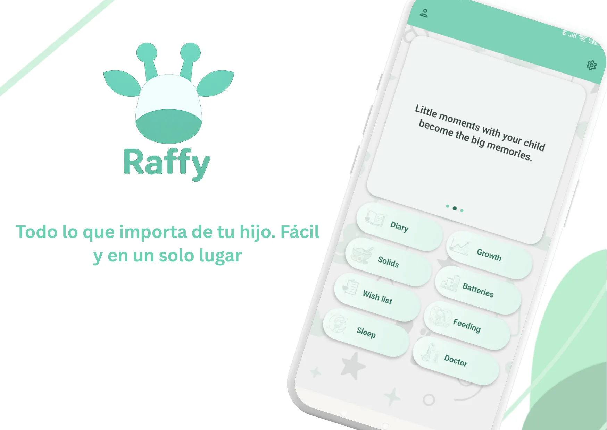

En esta página · 4 secciones
En resumen
Si solo necesitas consultas puntuales (un percentil OMS, un menú semanal), te bastan las herramientas web; elige una app cuando quieras registrar sueño, tomas, pañales y crecimiento día a día y ver la evolución en una única línea de tiempo. Es contenido educativo y no diagnóstico: ante dudas clínicas, consulta a tu equipo pediátrico.
A quién ayuda esta guía
- Familias que quieren registrar sueño, tomas, pañales, crecimiento y notas en un solo lugar.
- Cuidadores que necesitan recordatorios y continuidad entre turnos.
- Padres que buscan menos improvisación en la rutina diaria.
Sigue todo en Raffy
Sueño, tomas, crecimiento y rutinas en una sola app gratuita para Android.

Cuándo bastan las herramientas web
- Consultas puntuales como un percentil OMS.
- Planificación semanal de menús para 12-23 meses.
- Ajustes puntuales de ventanas de sueño o progresión de texturas.
Cuándo conviene más la app
- Necesitas ver evolución por días y semanas, no solo resultados sueltos.
- Quieres recordatorios de medicación, rutinas y seguimiento.
- Necesitas una línea de tiempo única para sueño, alimentación, síntomas y crecimiento.
Flujo recomendado: herramientas web + app Raffy
- Empieza con una herramienta concreta para resolver la duda puntual.
- Pasa a Raffy para registrar el día a día y los resultados.
- Revisa tendencias semanalmente y ajusta con criterio pediátrico.